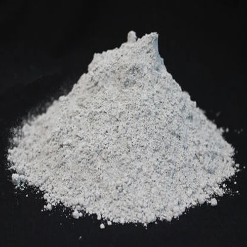

Limestone powder is a fine white calcium carbonate (CaCO₃) powder produced from natural sedimentary limestone rock mined from Rajasthan's Aravalli deposits — one of India's most consistent sources. We supply construction, agriculture, water treatment, glass, steel, and FGD industries with 95–98% CaCO₃ purity in 200–600 mesh from our processing plant in Alwar, Rajasthan.

Limestone powder is a fine white to off-white powder produced by crushing and grinding natural limestone rock to controlled particle sizes. Limestone is a sedimentary rock composed predominantly of calcium carbonate (CaCO₃) — typically 80–98% — formed over millions of years from the compressed remains of marine organisms including shells, coral, and foraminifera. When mined, crushed, and ground to specific mesh sizes, it becomes limestone powder: one of the most widely used industrial minerals in India.
The chemical formula of limestone is CaCO₃, with a molecular weight of 100.09 g/mol. When heated above 840°C, it decomposes into calcium oxide (CaO) and carbon dioxide (CO₂) — a reaction central to cement and lime manufacturing. CaO content is approximately 56%, CO₂ content approximately 44%.
All three — limestone powder, calcite powder, and ground calcium carbonate (GCC) — share the CaCO₃ formula, but they differ meaningfully in purity, processing, and application fit:
For most bulk industrial and agricultural applications, limestone powder delivers the required performance at the lowest cost per tonne.
Limestone powder (calcium carbonate, CaCO₃) is among the most widely consumed industrial minerals in India. It underpins the country's construction boom, feeds its agricultural soil amendment needs, supports municipal water supply quality, and serves as a critical reagent in environmental compliance systems for power plants. Below is a detailed breakdown of the main limestone powder uses by industry.
Portland cement is approximately 80% limestone by raw material composition — making construction the single largest end-use of limestone in India. In cement manufacturing, limestone provides CaO (calcium oxide) after calcination in a rotary kiln at ~1450°C. Clinker production requires precisely controlled CaCO₃/SiO₂/Al₂O₃ ratios; consistent limestone purity is therefore a production-critical specification.
In concrete, limestone powder filler (200–400 mesh) improves workability, reduces water demand, fills micro-voids between cement grains, and enhances long-term durability. The filler reacts with calcium aluminates in the hydrating cement to form calcium carboaluminate hydrates — a genuine contribution to strength, not merely dilution. Permeability is reduced, improving resistance to sulphate attack and carbonation.
In mortar, tile adhesives, and grouts, 300–400 mesh limestone powder improves spread consistency, extends open time, and enhances bond strength to masonry substrates. It reduces shrinkage cracking in thin-set mortars.
In asphalt and road construction, limestone mineral filler (200–300 mesh) improves bitumen adhesion and pavement durability by filling the voids in the aggregate skeleton and stiffening the bitumen film.
Soil stabilisation for roads and foundations is a major and growing application. When limestone powder is mixed into expansive or weak sub-grade soils at 3–8% by weight, it reduces plasticity index (PI), increases CBR (California Bearing Ratio), and controls swell in expansive clay soils. IS 6241 governs lime-soil stabilisation in India. This is a cost-effective alternative to cement-based stabilisation for sub-grade preparation in rural roads, highways, and foundations. Typical mesh used: 200–300 mesh.
Further reading: Limestone Powder in Construction — Detailed Guide
Agricultural limestone (aglime) is the most widely used and most economical soil amendment in India. Acidic soils — prevalent across large parts of eastern, central, and peninsular India — limit crop yields through aluminium toxicity, manganese toxicity, and phosphorus immobilisation. Limestone application corrects these problems at a fraction of the cost of alternative amendments.
The key metric is Calcium Carbonate Equivalent (CCE) — the neutralising power of the limestone relative to pure CaCO₃. A CCE of 95% means 100 kg of this limestone neutralises 95% as much soil acid as 100 kg of pure CaCO₃. CCE depends on both purity and particle fineness.
Fineness matters critically: particles finer than 150 mesh (100 microns) react within the first growing season; coarser particles (above 300 microns) react over 2–4 seasons. The Relative Neutralising Value (RNV) combines CCE and a fineness factor to give a single practical effectiveness score. Finer grades command a premium but deliver faster return on investment.
Typical application rates: 1–5 tonnes per hectare depending on initial soil pH, buffer pH, and crop requirements. Soils below pH 5.5 suffer acute aluminium and manganese toxicity; the target range for most crops is pH 6.0–6.8.
Beyond pH, limestone supplies Ca²⁺ essential for cell wall formation and root development, improves phosphorus and molybdenum availability, promotes beneficial soil bacteria, and reduces heavy metal uptake by crops.
Shikhar Microns supplies 100 mesh (coarser, slower reacting, most economical) and 200–300 mesh (faster reacting, premium agricultural grade) limestone powder for aglime applications.
Further reading: Agricultural Limestone — Soil Amendment Guide
Limestone powder is a preferred reagent for pH correction in both municipal water treatment and industrial effluent treatment — favoured over caustic soda and hydrated lime because it reacts gradually and uniformly, avoiding sharp pH overshoot, and is safer to handle in bulk.
In municipal water treatment, limestone powder dosing raises the pH of acidic source water to the 7.5–8.5 range, meeting IS 10500 drinking water standards (pH 6.5–8.5) and reducing pipe corrosion in distribution networks. Aggressive low-pH water dissolves lead, copper, and iron from pipes, creating both infrastructure and health concerns.
In industrial effluent treatment, limestone neutralises acidic wastewater from mining operations, electroplating facilities, pickling and metal finishing lines, and chemical manufacturing plants before discharge to watercourses or municipal sewers. This meets CPCB/SPCB discharge norms.
Acid mine drainage (AMD) treatment is a major application: highly acidic drainage from coal and metal mines (pH as low as 2–3) is neutralised by limestone dosing in passive or active treatment systems.
Recommended grade: 300–500 mesh for standard dosing systems; finer grades react faster and reduce accumulated sludge in settling tanks. For potable water applications, Fe₂O₃ content must be below 0.3% to avoid iron contamination — IS 10500 iron limit is 0.3 mg/L. Shikhar Microns supplies water treatment grade limestone with Fe₂O₃ <0.3%.
Further reading: Limestone Powder in Water Treatment
Limestone is a primary raw material in soda-lime glass — the most common glass type used in flat glass, containers, and windows — typically comprising 10–15% of the glass batch composition by weight. At the melting temperature (~1500°C), limestone decomposes to CaO (calcium oxide), which acts as a network modifier in the glass structure, improving chemical durability, hardness, and weather resistance.
The specification for glass-grade limestone is demanding: 400–500 mesh, Fe₂O₃ <0.05% (iron causes the characteristic green tint in clear glass), CaCO₃ >97%. Limestone powder is also used in fibreglass production as a CaO source.
In blast furnace ironmaking, limestone (and dolomite) is charged as a flux alongside iron ore and coke. At blast furnace temperatures, limestone decomposes to CaO, which reacts with silica, alumina, and other gangue minerals in the ore to form molten slag. The slag floats on the liquid iron and is tapped separately, removing impurities from the iron. Limestone also participates in desulphurisation, reducing sulphur content in pig iron.
The primary form used in blast furnaces is crushed limestone (not powder); however, limestone powder is used in iron ore sintering plants — where fine ore is sintered with flux before charging into the furnace — and in secondary metallurgy operations requiring controlled CaO addition.
Limestone powder is the primary reagent in wet scrubbing FGD systems used by thermal power plants to remove SO₂ from combustion flue gases. The reaction: CaCO₃ + SO₂ + ½H₂O → CaSO₃·½H₂O (calcium sulphite), which is further oxidised by forced air injection to produce gypsum (CaSO₄·2H₂O) — a saleable by-product used in cement and wallboard manufacturing.
India's Ministry of Environment, Forest and Climate Change (MOEF&CC) notification mandating FGD installation on coal-fired thermal power plants has substantially increased demand for FGD-grade limestone powder across India's power sector. Typical specification: 325 mesh high-reactivity limestone, CaCO₃ >95%, reactive grade. The reactivity of the limestone (its dissolution rate in acidic slurry) is a key performance variable in FGD system design.
Lower-purity limestone powder (200–400 mesh) is used as a cost-effective extender in exterior textured paints, masonry coatings, and distemper formulations. Where whiteness and brightness are less critical than cost — particularly in coarse-textured exterior architectural coatings — limestone at 85–90% whiteness is a practical alternative to premium calcite.
For colour-critical applications (white interior emulsion paints, PVC compounds, plastics, and paper), calcite powder with 98.5%+ CaCO₃ and GE brightness 90+ is required. Limestone powder is not a substitute for these demanding optical-performance applications.
All three are carbonate minerals used as fillers and mineral additives across many of the same industries. They differ in chemical composition, purity, whiteness, hardness, and ideal application. Choosing the wrong grade costs either money (overpaying for purity you don't need) or performance (using an underpowered grade in a quality-sensitive application).
| Property | Limestone Powder | Calcite Powder | Dolomite Powder |
|---|---|---|---|
| Chemical Formula | CaCO₃ | CaCO₃ | CaMg(CO₃)₂ |
| CaCO₃ Content | 80–98% | 98–99.5% | 54–58% CaCO₃ equivalent |
| MgCO₃ Content | <2% | <1% | 40–44% |
| Whiteness | 85–92% | 90–96% | 85–92% |
| GE Brightness | 80–90 | 90–95 | 82–90 |
| Mohs Hardness | 3 | 3 | 3.5–4 |
| Primary Uses | Construction, agriculture, water treatment, FGD, steel | Paints, PVC, plastics, putty, paper | Rubber, glass, ceramics, agriculture (Mg-deficient soils) |
| Relative Cost | Lowest | Medium | Medium |
Bulk construction applications (cement filler, soil stabilisation), agricultural liming, water treatment pH control, FGD systems, and steel/metallurgy flux. Cost is the priority and moderate CaCO₃ purity (95–98%) is sufficient.
Paints, PVC pipes, wall putty, paper, and plastics — where brightness 90+, purity 98.5%+, and consistent particle size distribution are critical to product quality. See: Calcite Powder.
Applications requiring magnesium content: rubber compounding, glass flux, ceramic glazes, and agriculture on Mg-deficient soils. Harder than calcite (Mohs 3.5–4), preferred where abrasion resistance matters. See: Dolomite Powder.
Full comparison: Calcite vs Dolomite vs Limestone — Complete Guide
Shikhar Microns is a direct limestone powder manufacturer in India, processing limestone from Rajasthan's Aravalli mineral belt at our facility in Alwar — one of India's most established industrial mineral processing regions. We do not trade sourced material: all production is from our own plant with full control over ore selection, grinding, classification, and quality documentation.
For limestone powder suppliers India — Shikhar Microns is your direct-manufacturer partner. Request a quote or contact us for samples and technical data sheets.
| Parameter | Specification | Test Method |
|---|---|---|
| Calcium Carbonate (CaCO₃) | 95–98% | IS 1760 |
| Calcium Carbonate Equivalent (CCE) | 95–98% | IS 1514 |
| Acid Insoluble (SiO₂) | <2.0% | IS 1760 |
| Iron Oxide (Fe₂O₃) | <0.3% | IS 1760 |
| Whiteness | 85–92% | Hunter Lab |
| GE Brightness | 80–90 | ISO 2470 |
| Moisture Content | <0.5% | IS 1760 |
| pH (10% suspension) | 8.5–9.5 | IS 1760 |
| Oil Absorption | 15–25 g/100g | ASTM D281 |
| Bulk Density | 0.8–1.2 g/cc | IS 1760 |
| Specific Gravity | 2.71 g/cm³ | IS 1760 |
| Particle Size (D50) | 5–15 microns (grade-dependent) | Laser Diffraction |
| Mesh Size | Particle Size (Microns) | Primary Applications |
|---|---|---|
| 200 Mesh | 74 microns | Cement production, concrete filler, soil stabilisation, agricultural lime (coarse grade, 2–4 season reaction) |
| 300 Mesh | 50 microns | Agricultural lime (standard grade, fast season reaction), water treatment pH control, asphalt mineral filler |
| 400 Mesh | 37 microns | Water treatment (fine dosing, reduced sludge), glass batch, tile adhesive, mortar and grout |
| 500 Mesh | 25 microns | Glass manufacturing (low-iron grade), FGD scrubber systems, specialty industrial applications |
| 600 Mesh | 20 microns | FGD high-reactivity grade (maximum SO₂ absorption efficiency), specialty chemical applications |
Cement, concrete, soil stabilisation, asphalt filler — detailed guide to construction uses.
Read ArticleSoil pH correction, CCE explained, application rates, and crop-specific pH targets.
Read ArticlepH control, acid neutralisation, effluent treatment, and drinking water standards.
Read ArticleFull comparison of composition, whiteness, hardness, and best-fit applications.
Read ArticleHigh-purity calcite (98.5%+ CaCO₃) for paints, PVC, wall putty, and plastics — when limestone grade is not enough.
View ProductContact us for competitive pricing and bulk supply of high-quality limestone powder for your specific application needs.
GET QUOTE NOW